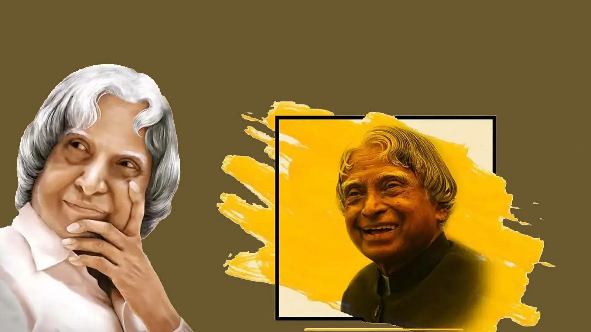

A. P. J. Abdul Kalam
THE MISSILE MAN OF INDIA

Here's a time line of A.P.J.Abdul Kalam
- He was India’s first Bachelor President and a Vegetarian: Abdul Kalam was the first such President who had never married. He was a muslim by religion and had never eaten meat. He was a pure vegetarian.
- Honarary doctorates: It would surprise you that Abdul Kalam had 48 doctorates. He had received honorary doctorates from 48 universities from India and abroad.
- Missile Man for this reason: If you have seen the movie Parmanu, you would know the man portrayed as the mastermind of the initiative of having missiles as a deterrent was Dr APJ Abdul Kalam. He was responsible for the development and operationalisation of Agni and Prithvi missiles. This is the reason people know him as the Missile Man of India. He always said that power commands respect and believed that other nations would respect India only if we are powerful.
- Awards that no one has in a lifetime: It is true that legends do exist. If you see Kalam's life you would agree too. He had awards like Padma Bhushan in 1981, Padma Vibhushan in 1990 and was a Bharat Ratna, the highest honour any civilian could get in India in 1997.
- Children’s President: Two leaders are said to be the favourite of Indian children. People knew Prime Minister Nehru as Chacha Nehru but Kalam was the President who was famous among kids. Children idolised APJ Abdul Kalam and he loved to spend his time among them. Kalam gave the idea of nurturing the youth to build a better India. He was totally into science and motivated the young minds to give themselves to the field. Many children of his time remember him showing up to their science exhibitions or sports days just to motivate the young minds. His email account was open to all children in India so he was also one of the most reachable Presidents of India.
- Autobiography translated into 13 languages: Abdul Kalam wrote his autobiography which was translated into 13 languages. It was first published in English, but such was the success of the book and demand of people to know about his life that the book was then translated into 13 languages including French and Chinese. There are also 6 biographies on his life.
- To support his family Kalam used to distribute newspapers after his school hours to add to his father's income.